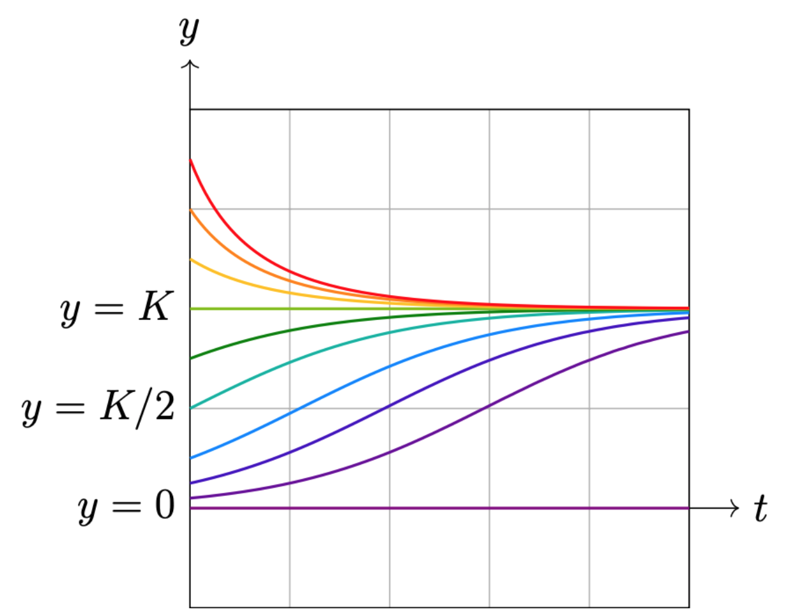

Chapter 3 Demo
Visualizing the dynamic perspectives of first-order ODE's.
The logistic model.
Here we visualize the solutions to the logistic model
\begin{align} \dfrac{dy}{dt} = ry\Big(1- \dfrac{y}{K}\Big), \end{align}
with constants $r,K > 0$.
The figure below shows the solution curves $y(t)$ for various values of $y(0) \ge 0$.
To play with the visulization yourself, choose values for the constants $r$, $K$, and choose the intial condition $y(0)=y_0$ at time $t=0$:
Playing with slopes fields.
You can go to the site below to generate your own slope fields. Have fun!